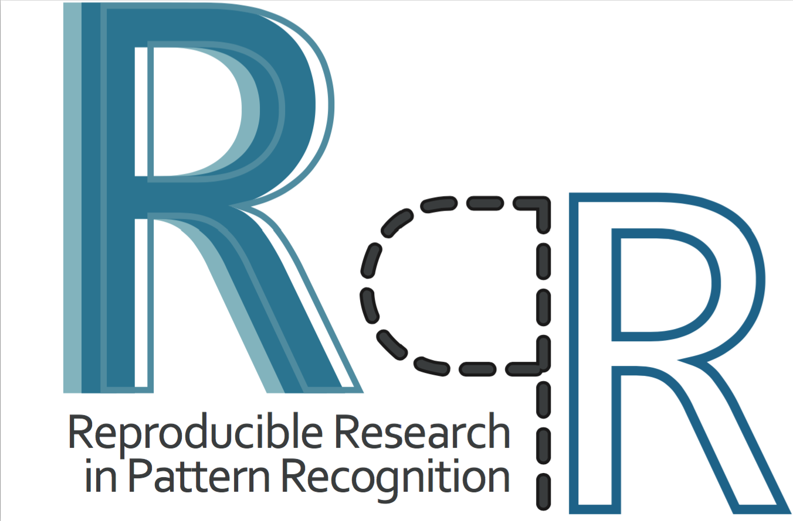

1. DGMM news
2. News about ICPR deadlines
3. Third edition of the workshop on Reproducible Research in Pattern Recognition (RRPR)
4. Special issue IM3L (Mathematical Morphology -- Theory & Applications)
5. ACPR Tutorials on Digital Geometry in Pattern Recognition
6. List of 2019 major Journal Papers
The International Conference on Discrete Geometry and Mathematical Morphology (DGMM) will be held on December 14-17, 2020. We are delighted to host DGMM 2020 at the Centre for Image Analysis, Department of Information Technology, Uppsala University, Sweden.
This is the first joint event between the two main conference series of IAPR TC18, the International Conference on Discrete Geometry for Computer Imagery (DGCI) and the International Symposium on Mathematical Morphology (ISMM). DGMM offers the opportunity to share high quality research results within the fields of discrete geometry and mathematical morphology and their applications to image processing and image analysis.
Welcome to Uppsala in December!
As you probably know, the ICPR deadline of the main call for papers is coming:
If you are interested to submit an ICPR tutorial in relation to discrete geometry or/and mathematical morphology, we can help you and support your application. It can be important to avoid overlap between several proposals and to allow the ICPR tutorial chair to potentially cover all TC research areas.
Note that the tutorial speakers will benefit of free registration and contribution to travel expenses can be granted (depending on the workshop attendance). See more details here:
https://www.micc.unifi.it/icpr2020/index.php/call-for-tutorials/
In conjunction to ICPR 2020, the third edition of the RRPR workshop will be held at Milan 13 or 18 September. The call for papers is available and updated in the main website: https://rrpr2020.sciencesconf.org
| Mainly focused on the Reproducible Research, this workshop is of interest for all ICPR attendees since it allows to handle various topics not restricted to one specific field. The reproducibility is an important topic in general and particularly good for PhD students and young researchers to learn "good habits". A special track on Geometry and Deep Learning is proposed for this new edition (not exclusive).
|
 |
A new MMTA special issue (Mathematical Morphology - Theory and Applications) on Interaction between Mathematical Morphology and Machine Learning is proposed by Samy Blusseau and Elodie Puybareau. The journal is open access, and this special issue does not have article processing charges (APCs) nor article submission charges.
Deadline for submissions: June 1st, 2020. See call for papers: https://tinyurl.com/MMTA2020-TC18last
If you have any questions, please contact the guest editors: elodie.puybareau@lrde.epita.fr and samy.blusseau@mines-paristech.fr .
A new tutorial on Digital Geometry was presented during the ACPR 2019: "Digital Geometry in Pattern Recognition: Extracting Geometric Features with DGtal and Applications".
presented by Bertrand Kerautret (Université de Lyon 2, France) and Jacques-Olivier Lachaud (Université Savoie Mont-Blanc, France).
The GitHub repository is availabe: here
As done the previous years, the list of DG and MM publications in major journals for our community has been completed for 2019:
http://tc18.org/files/2019-Papers.txt
we may have missed some, so let us know and we will update it. By the way, we started to fill the list for 2020; if you know a reference accepted in the associated journal, do not hesitate to contact us.